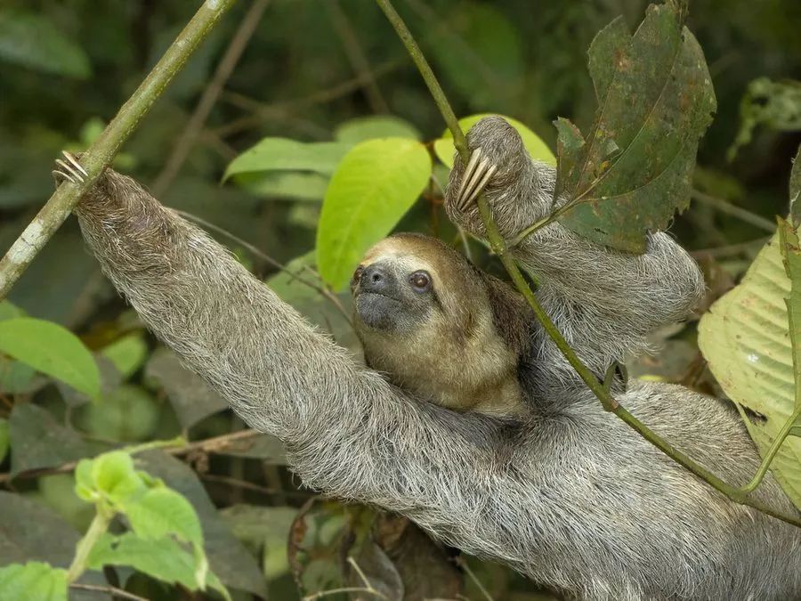

哺乳动物 · 动物界
三趾树懒 Bradypus tridactylus

中南美洲雨林中的慢动作树栖动物，每爪只有三趾，终年倒挂在树上，毛上长着藻类，一周才下树排泄一次。
- 分类
- 门脊索动物门纲哺乳纲目披毛目科树懒科属树懒属
- 栖息环境
- 热带雨林树冠层，偏好有充足树叶的树木
- 地理分布
- 中美洲和南美洲北部，从洪都拉斯到巴西、圭亚那的雨林
- 保护级别
- IUCN 无危（LC）
物种志
三趾树懒体长 0.4–0.75 米，体重 3–5 kg。它的身体圆而扁，四肢细长，前肢和后肢各有三趾，趾端有长而弯曲的钩爪，可以牢牢挂住树枝；被毛为灰褐至棕褐色，毛干上有沟槽，常附生绿藻，使它看起来偏绿；面部有深色眼纹。
三趾树懒分布于中美洲和南美洲北部的热带雨林，栖息于树冠层，几乎终生在树上活动。它行动极慢，每天睡 15–20 小时，主食树叶、嫩芽和果实，消化过程缓慢，一周左右才下树到地面排泄一次。树懒的毛上共生着绿藻和蛾类，形成独特的小生态；游泳时反而比在地面行走快。雌兽妊娠期约 6 个月，每胎 1 仔，幼仔会抓住母兽胸部随行。由于雨林砍伐和道路切割，部分种群受到威胁，但整体被列为无危。
形态与习性
- 食性树叶、嫩芽与果实，消化缓慢
- 体长0.4–0.75 m
- 体重3–5 kg
- 寿命野外约 20–30 年
- 繁殖妊娠期约 6 个月，每胎 1 仔
- 睡眠每天 15–20 小时
- 排泄一周左右下树排泄一次
趣味知识
- 三趾树懒的毛上常附生绿藻，让它与树叶几乎融为一体。
- 它一周左右才下树排泄一次，多数时间倒挂在树上。
- 树懒在水里游泳的速度反而比在地面爬行更快。
- 幼仔出生后会抓住母兽胸部，跟随母亲生活数月。